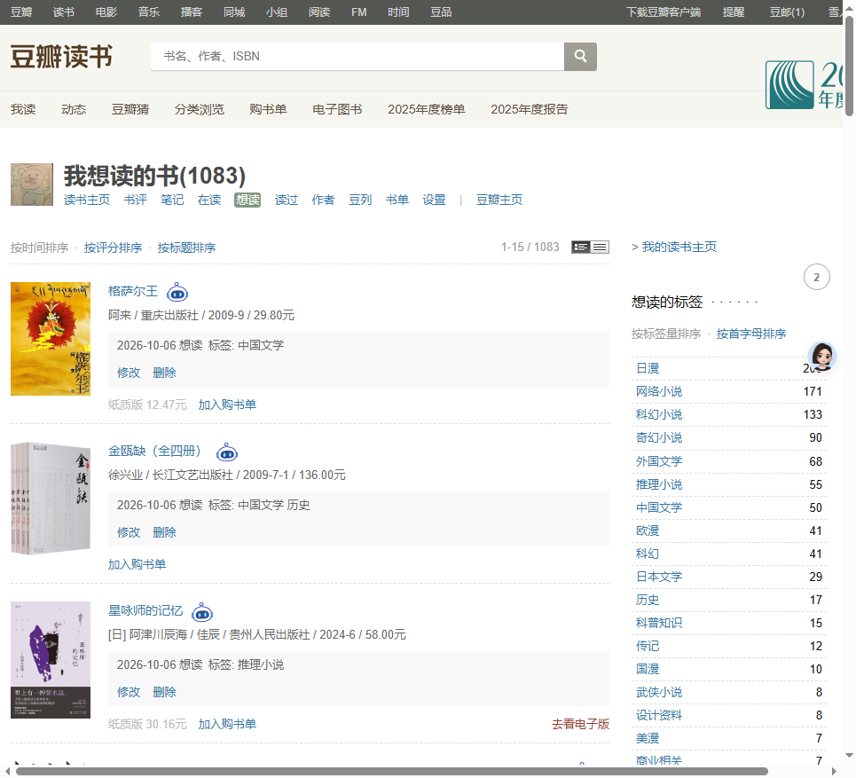
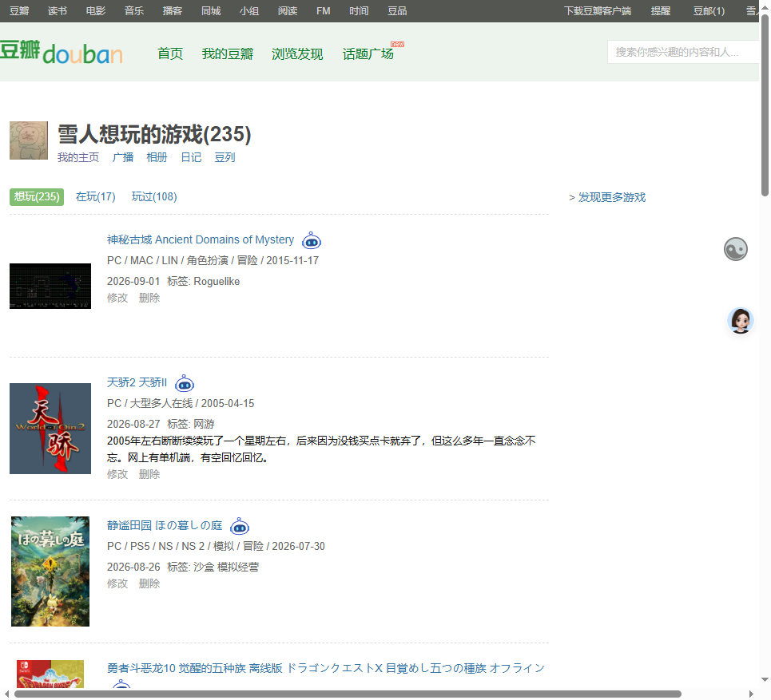
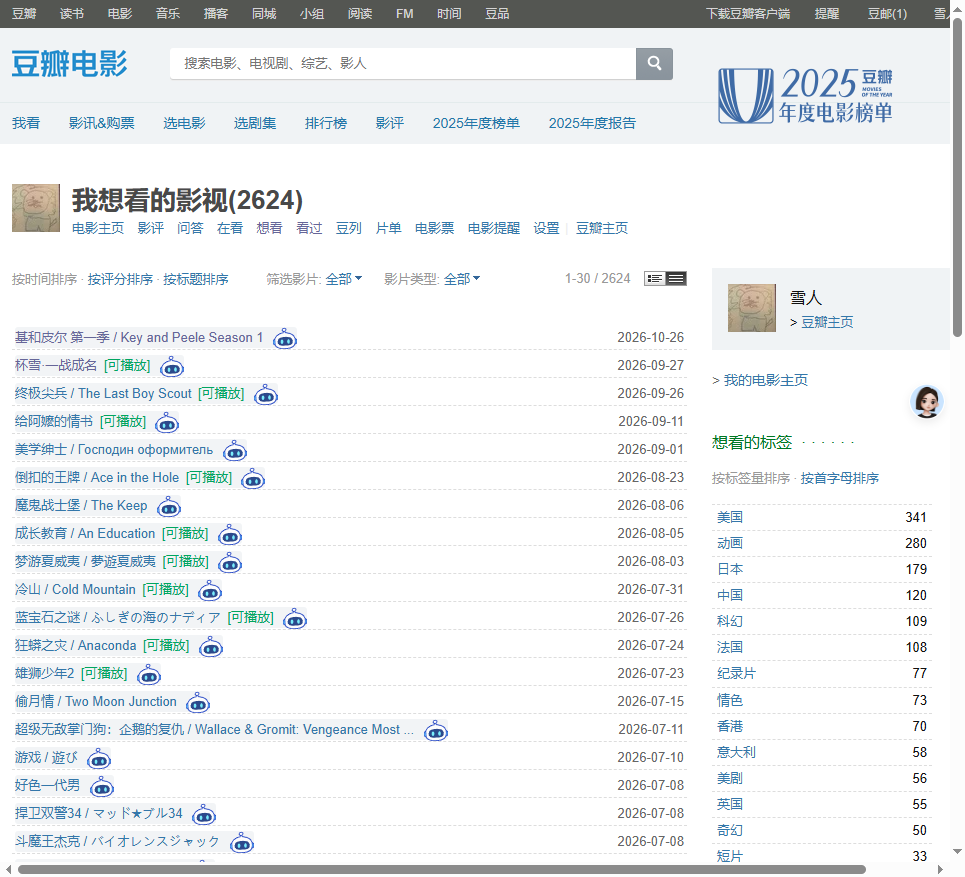

基于 2026-11-05 真机测量（三站四种结构、视口 965×877）。 下面三张方案图都叠在真实页面截图上，彩色块就是按钮的落点；同一站里每条的位置完全一致。
按钮浮在封面区域右下角，像收藏角标。
三站一套规则 不撑高 遮封面右下角 24×24right:4px; bottom:4px（相对封面框）按钮放在封面下方留白里，不压封面。
不遮封面 游戏页只有 21px 需缩到 20px 或压边 3px所有行按钮统一贴条目右缘，像「操作列」。
最整齐 完全不遮内容 离封面太远 列表视图会撞日期 长简介会被压住每条画了两行，A 蓝 / B 橙 / C 绿。图里能直接看出「同一站每条是不是同一个位置」。



| 看什么 | A 封面角标 | B 封面下方 | C 右侧固定列 |
|---|---|---|---|
| 同一站每条是否同一位置 | 是 | 是 | 是 |
| 会不会撑高列表 | 不会（浮层不占位） | 不会（游戏压边 3px） | 不会 |
| 遮不遮封面 | 读书/游戏遮右下角 24×24 | 不遮 | 不遮 |
| 游戏页（只有 21px） | 放得下 | 24px 差 3px，要缩到 20px | 放得下 |
| 列表视图（无封面） | 日期左侧固定 | 日期左侧固定 | 会压住日期 |
| 会不会压住文字 | 不会（封面区域是空的） | 不会 | 游戏长简介、列表日期都会被压 |
| 离标题/封面的距离 | 近 | 最近 | 远（横移约 600px） |
| 要不要动豆瓣自己的布局 | 不动 | 不动 | 列表视图要改 |
你的红框（封面下方）在影视、读书页都放得下，但游戏页封面下方只有 21px， 24px 的按钮要么缩成 20px（手指不好点），要么压住下一条 3px。方案 A 把按钮放进封面右下角， 三站一套规则、零撑高、不用给游戏开特例；遮住的是封面右下角一小块（约 5%）， 点起来也离封面最近。
如果你更在意「一点都不遮封面」，就选 B，代价是游戏页按钮小一号（20px）。 两个方案我都能做，列表视图都用「日期左侧固定」这一条规则。
.title 移出来，挂到条目容器上，用绝对定位；
条目容器加 position:relative，按钮不占文档流，所以行高一个像素都不变。.pic 为锚点（A 用 right:4px;bottom:4px；
B 用 left:50%;transform:translateX(-50%);top:封面底+3px）。.date 为锚点，按钮右缘距日期左缘 8px，垂直居中；
没有日期就退回条目右缘内侧 10px。data-cm-subject 和绑定的详情地址；
浮窗仍以这颗按钮为锚点，弹出位置规则不变。